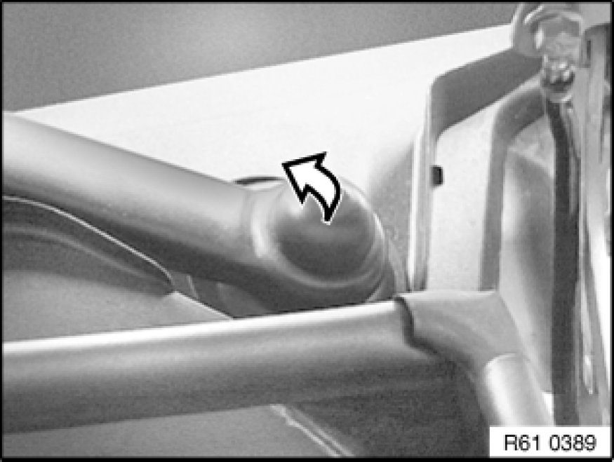
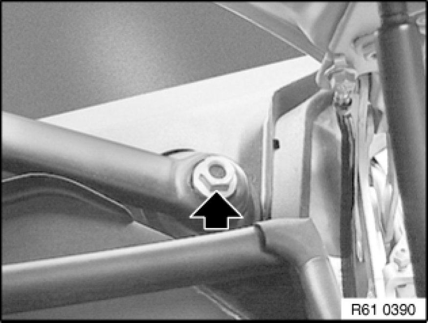
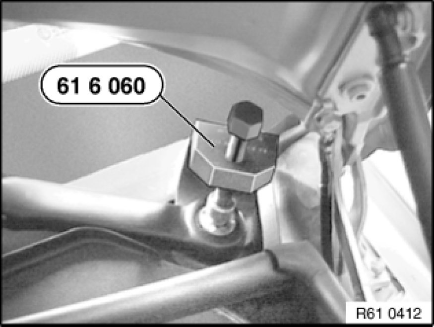
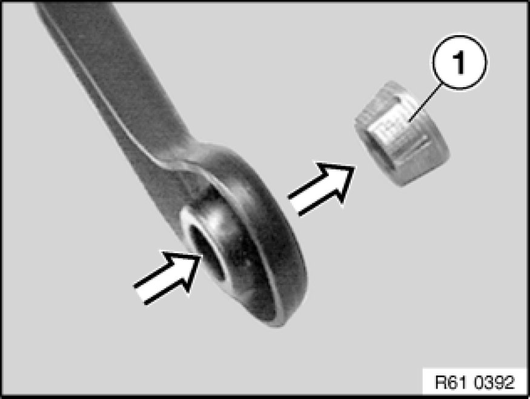
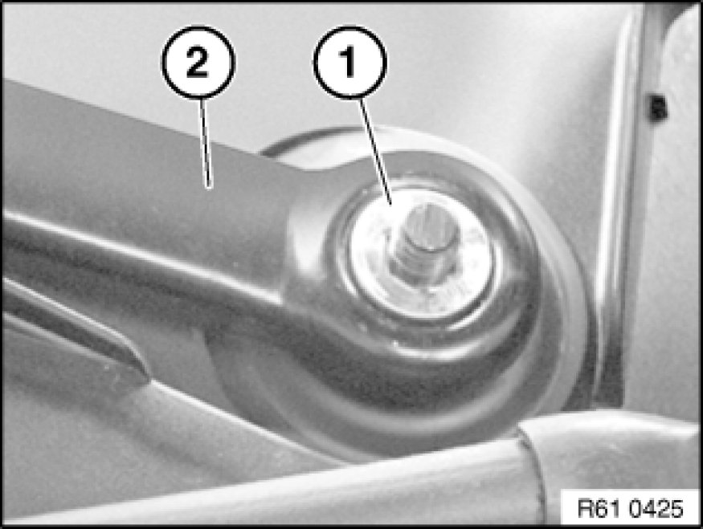
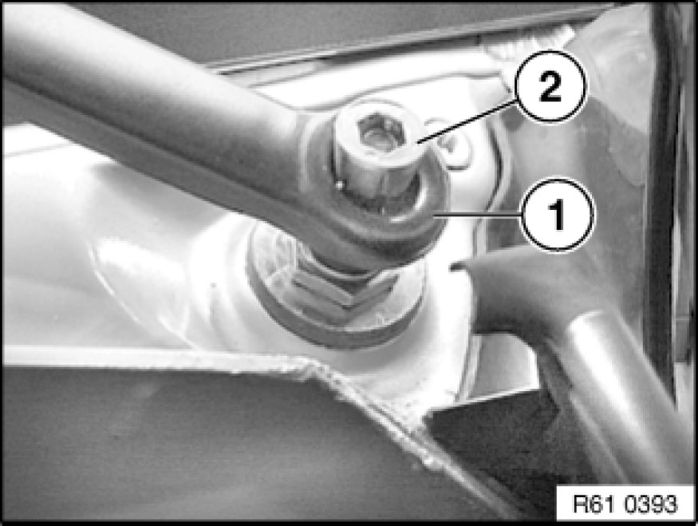
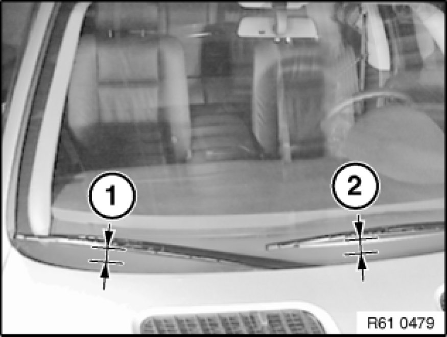

Removing and Installing/Replacing Both Windscreen Wiper Arms
61 61 100 - Removing and installing/replacing both windscreen wiper arms

Special tools required:
- 61 6 060 61 6 060 Universal Wiper Arm Puller

Take off cap.

Unfasten nut.
Installation:
Observe tightening torque, 61 61 10AZ 61 61 Windshield Wipers.

Important!
Do not bend windscreen wiper arm during removal (risk of breakage).
Detach windscreen wiper arm with special tool 61 6 060 61 6 060 Universal Wiper Arm Puller.

Installation Note:
Check that sleeve (1) is firmly seated.
If sleeve (1) is loose, it must be replaced.
A sleeve (1) firmly seated in the windscreen wiper arm can be reused.

Windscreen wiper arm with firmly seated sleeve (1):
Return wiper system to rest position. Push wiper arm (2) with firmly seated sleeve (1) onto shaft and tighten down.
Observe tightening torque, 61 61 10AZ 61 61 Windshield Wipers.
Check setting of wiper arm (2).
To correct setting, replace sleeve (1).

Windscreen wiper arm with new sleeve (2):
Return wiper system to rest position.
Push wiper arm (1) with sleeve (2) onto shaft and tighten until hand-tight.

Adjust position of wiper arm in question in rest position (measured between wiper lip and top edge of cowl panel cover).
Then tighten down wiper arm and check position of relevant wiper arm again.
1. 66 ± 1.5 mm
2. 61 ± 1.5 mm
Observe tightening torque, 61 61 10AZ 61 61 Windshield Wipers.